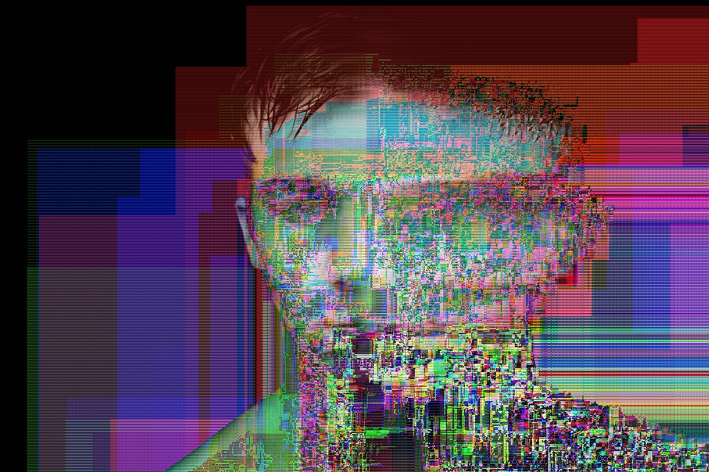
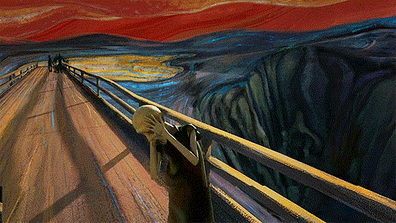

Entendemos Glitch como un defecto, un mal-funcionamiento en una maquina. En su conjunto entendemos el glitch como un problema, un error.
Esa es la explicación 'técnica' que encontramos en cualquier cualquier sitio que nos de una explicación de que es Glitch.
La otra explicación es que estamos ante el sitio en el que confluyen lo inusual, lo grotesco, lo extraño, lo inesperado.
Glitch es el antagónico de la belleza generada por photoshop, glitch es la resistencia a un canon de belleza que día a día nos satura con imágenes tratadas hasta la extenuación en las que no encontramos ningún atisbo de imperfección.
Glitch en si, no tiene una explicación exacta, glitch es lo inesperado, lo aleatorio, y en muchas ocasiones es lo mágico de lo efímero.
Uno de los mejores ejemplos de Glitch es Neo en Matrix.
Neo es un ser que ha sido desechado porque no funcionaba como el resto de seres en el criadero donde se encontraba, es un bug que cambia el curso de lo establecido.
De la misma forma en que lo hacen los Replicantes de Blade runner, son otro tipo de error que cobra vida, que exige su derecho a existir, a no ser desechados por no ser y/o estar dentro de lo previsto.
Glitch es el reciclaje, es familiar cercano del circuit bending, se genera desde curiosidad, desde el uso alternativo de las herramientas para reapropiarse del objeto y reclamar su pertenencia.


Para trabajar con imagenes tenemos dos opciones:
Para trabajar con audio vamos a necesitar (si no lo tenemos previamente instalado) instalar un par de programas indispensables.
Audio hecho con una imagen modificada en audacity
Audio creado a partir de una fotografia mezclado con varios samples
Otro software que es intersante para poder estirar, recortar-repetir y aparentar el sonido de antiguas cintas de cassete es el famoso Glitch , un plugin que tiene dos versiones, la anterior que esta en deshuso y han dejado de darle soporte y la nueva version, que es una versión de pago.
Para hacer glitch a un video, tenemos varias opiciones. Desde la mas sencilla que es utilizando el editor de texto, con el editor de texto hexadecimal o con los programas de edición de video mas conocidos como avidemux
Es necesario, para poder utilizar Avidemux, que descarguemos la version 2.5, que es la versión que permite copiar y pegar frames. Las posteriores versiones tienen esta función corregida porque lo tomaron como un fallo del programa y ya no permite realizar glitches.
Estos son algunos ejemplos de lo que se puede hacer con el video.
Este es un video hecho con avidemux y vim
Este video esta hecho frame by frame, modificando foto a foto.
Tenemos varios recursos que nos seran utiles a la hora de hacer Glitch a nuestras imagenes en el siguiente apartado encontraran una serie de software que suelo utilizar. En esta Carpeta he añadido el software que vamos a utilizar en el taller. Fotos videos y audios los llevaré en un pendrive.
algunos opcionales son:
El codigo del banner me lo encontré aquí
Unos cuantos videos interesantes:
http://bug273.github.io/glitch/#recursos